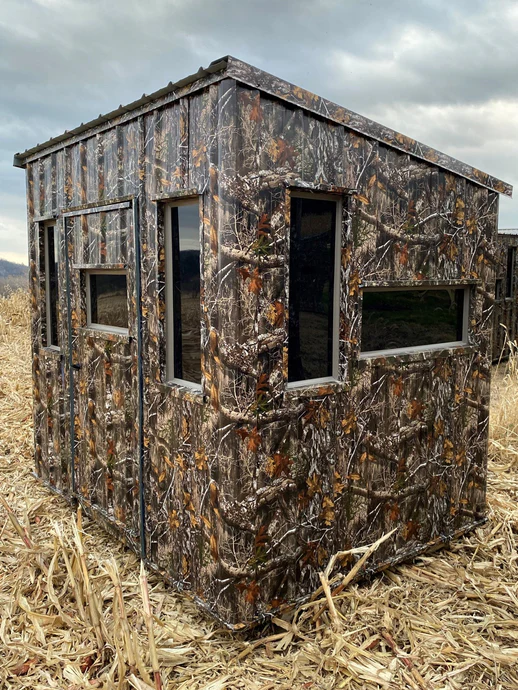
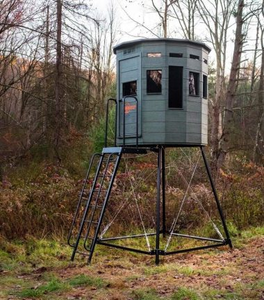
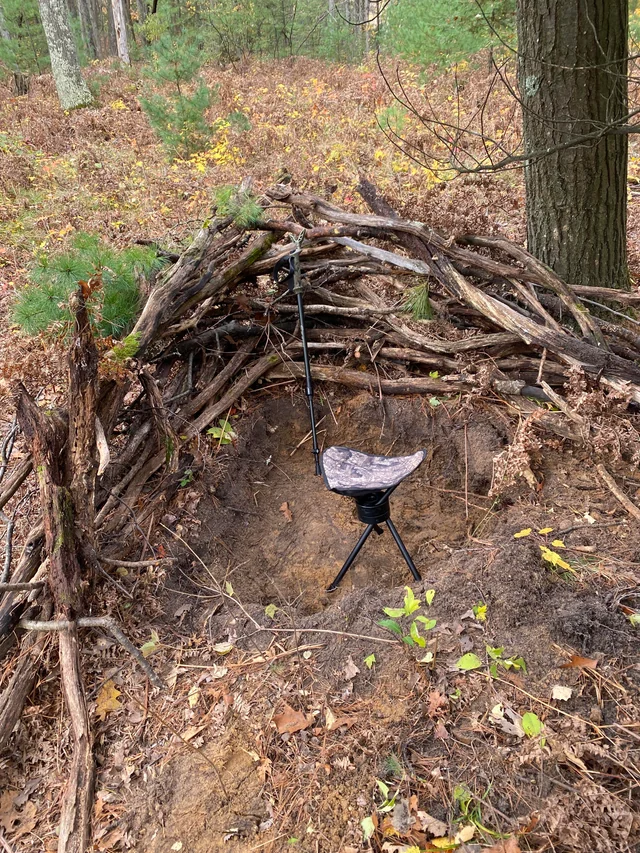
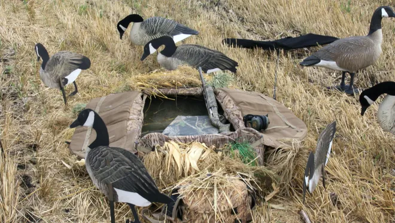

Types of Hunting Blinds and Their Advantages
1. Ground Blinds (Pop-up Blinds)
- Advantages: Portable, easy to set up, and excellent for concealment at eye level.
- Great for deer, turkey, and waterfowl hunting in flat terrain.

2. Box Blinds (Hard-sided Blinds)
- Advantages: Offers full weather protection, excellent scent control, and sound insulation.
- Perfect for long hunts and used mostly for deer and hog hunting.

3. Elevated Blinds (Tree Stand Blinds or Tower Blinds)
- Advantages: Gives better visibility over long distances and helps avoid detection through scent and movement.
- Ideal for open fields or large properties with deer or elk.

4. Natural Blinds (Brush or DIY Cover)
- Advantages: Blends perfectly with the environment, costs little to no money.
- Good for quick hunts and spontaneous set-ups; used for small game or turkey.

5. Layout Blinds
- Advantages: Designed for waterfowl hunters in open fields or marshes; allows hunters to lie flat and blend in.
- Lightweight and easily camouflaged with field debris.
